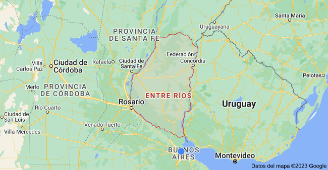
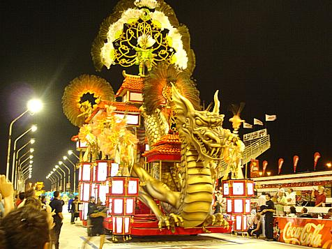
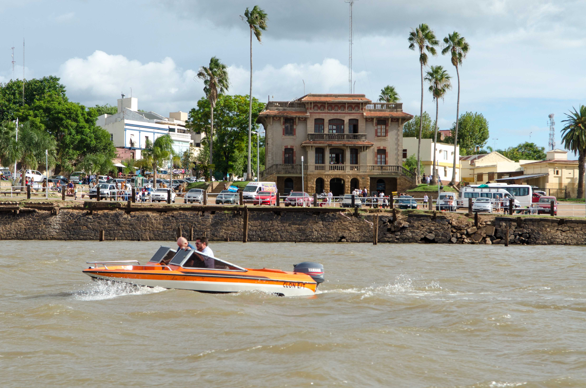
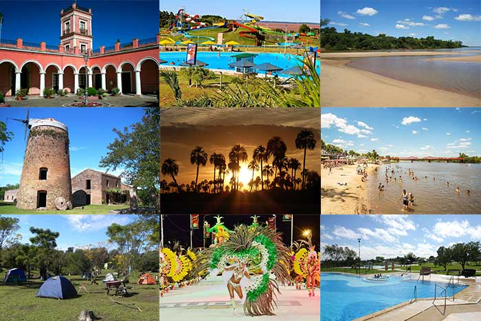

"DONDE LA TRADICIÓN Y LA CELEBRACIÓN SE ENTRELAZAN"
Entre Ríos, una provincia en la región de Mesopotamia en el noreste de Argentina, se encuentra en un escenario natural envidiable, entre los ríos Paraná y Uruguay. Esta provincia es conocida por su rica tradición en la producción de yerba mate y el aprecio por el mate, una bebida icónica en Argentina. Sin embargo, Entre Ríos tiene mucho más que ofrecer.

Aguas Termales y Relax: Si buscas un descanso rejuvenecedor, las fuentes termales de Federación son un oasis de relajación. Las aguas termales son conocidas por sus propiedades curativas y son un destino popular para aquellos que desean recargar energías en medio de un entorno natural.
Parques Nacionales: La provincia alberga dos parques nacionales fascinantes. El Parque Nacional Predelta es un paraíso para los amantes de las aves, con una abundante variedad de especies que habitan en su entorno. Por otro lado, el Parque Nacional El Palmar es una reserva que preserva la palma yatay, una especie nativa que alguna vez cubrió la región. Estos parques son ideales para el ecoturismo y la observación de la naturaleza.
Carnaval de Gualeguaychú: En Entre Ríos, el verano da paso a una de las fiestas a cielo abierto más grandes de Argentina: el Carnaval de Gualeguaychú. Esta celebración tiene sus raíces en el siglo XIX y ha evolucionado con el tiempo. Hoy en día, es un evento espectacular que atrae a visitantes de todo el país y el mundo. Las comparsas desfilan en el Corsódromo de Entre Ríos, creando un ambiente de alegría y color que no querrás perderte.
Historia y Tradición: La historia de Entre Ríos está llena de momentos significativos para Argentina. La provincia desempeñó un papel importante durante el siglo XIX y es conocida por figuras históricas como Justo José de Urquiza. Además, la rica tradición cultural y folclórica de Entre Ríos se manifiesta en su música, danzas y festivales a lo largo del año.
Turismo Fluvial: Entre Ríos también es un destino para los amantes del turismo fluvial. Los ríos Paraná y Uruguay ofrecen oportunidades para la navegación, la pesca y la exploración de islas. Puedes embarcarte en emocionantes aventuras acuáticas y disfrutar de la belleza natural que rodea a la provincia.
Gastronomía Regional: No puedes dejar Entre Ríos sin probar sus delicias culinarias. La provincia es famosa por sus platos tradicionales como el asado, el pescado de río y, por supuesto, el mate. Los sabores auténticos de la región te cautivarán y te dejarán con ganas de más.
Podemos decir entonces que Entre Ríos es un destino que combina la belleza natural con la historia, la tradición y la celebración. Ya sea que estés en busca de aventuras al aire libre, relax en aguas termales o experiencias culturales, esta provincia tiene algo especial para cada visitante.
¡Ven y descubre todo lo que Entre Ríos tiene para ofrecer!